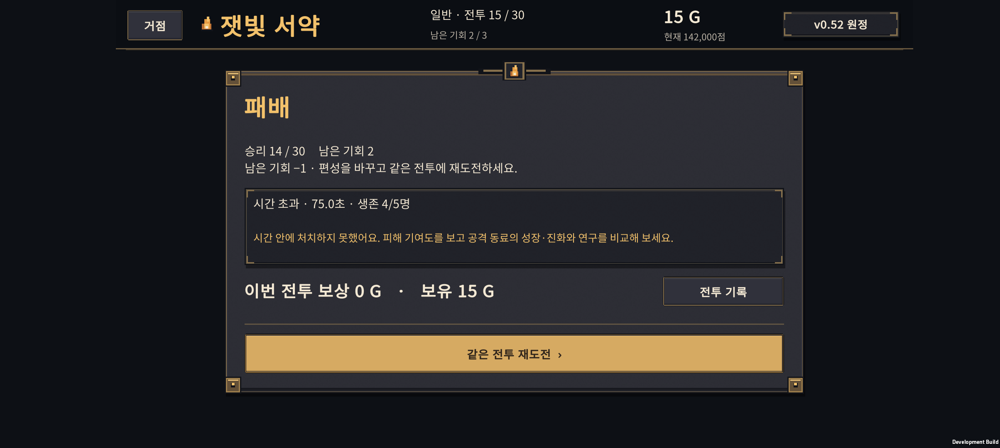
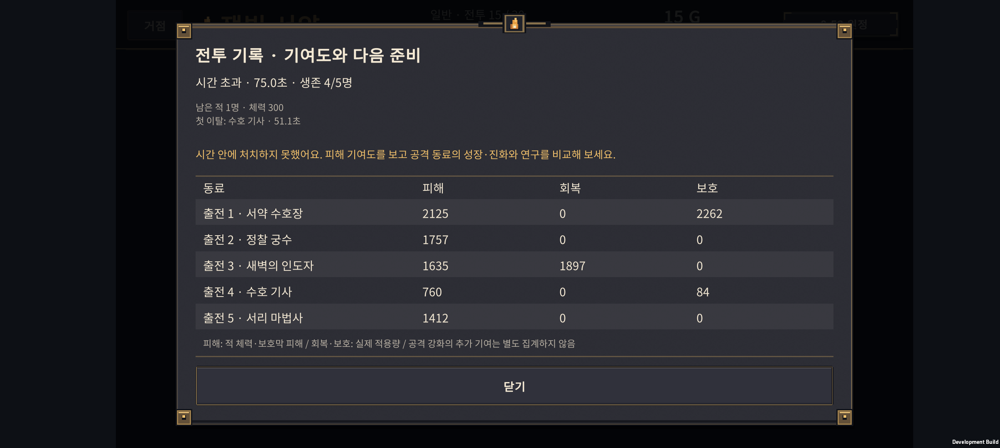
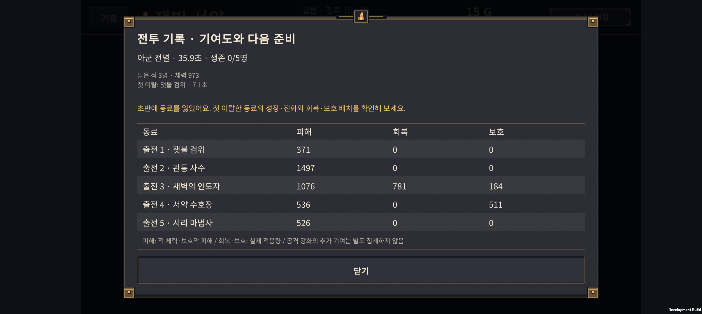

v0.67 · 중반 압박 비교와 패배 원인 표시
2026-11-01 · IGNIS: ASHEN OATH
이전 이야기·첫 결합 안내 작업은 b5fae2b로 커밋하고 origin/main에 푸시했다. 이번 작업은 그 다음 단계다.
새 원정의 15전투 용광로 보스 체력만 6,000 → 5,700으로 조정했다. 18·19전투는 적 수치보다 배치·투자 선택의 영향이 커서 현재 수치를 유지했다. 패배 화면과 전투 기록에는 실제 실패 방식과 다음 준비에 쓸 근거를 추가했다.
바뀐 화면
- 결과에서 시간 초과 / 아군 전멸, 전투 시간, 생존 동료 수를 구분한다.
- 전투 기록에 남은 적 수·체력, 처음 쓰러진 동료와 시점, 동료별 실제 피해·회복·보호량을 함께 표시한다.
- 초반 원거리 동료 이탈이면 회복·보호 범위와 시작 위치를, 시간 초과이면 공격 동료의 성장·진화와 연구를 비교하도록 제안한다. 단일 원인을 확정해서 말하지 않는다.
- 기록을 읽거나 닫는 동작은 전투·보상·남은 기회를 변경하지 않는다. 앱을 다시 켜 상세 전투 기록이 없을 때는 실패 원인을 추측하지 않는다.
- 15전투 준비 안내에 제한 75초와 공격 동료의 투자 점검을 추가했다. 19전투의 ‘목표를 고르세요’는 실제 조작에 없는 기능이라 회복·보호 범위를 점검하는 문구로 바꿨다.



비교 방법과 범위
1,344개 자동 원정 실행, 정상 진행 전투 23,654회, 같은 편성의 격리 비교 3,858회를 구분해 집계했다. 도달하지 않은 전투로 강제로 이동하거나 골드·체력을 보충하지 않았다. 새 원정부터 실제 소환·성장·진화·결합·연구 API로 진행하고 기회가 소진되면 종료했다.
| 묶음 | 규칙·투자 순서 | 원정 실행 | 정상 진행 전투 | 격리 비교 |
|---|---|---|---|---|
| 후보 탐색 A | normal-052 · 기존 Balanced | 336 | 6,398 | 1,716 |
| 후보 탐색 B | normal-052 · 공격 동료도 일찍 분기 진화 | 336 | 6,136 | 1,795 |
| 추가 시드 검증 | normal-052 진행 · 같은 편성에 normal-067 적용 | 336 | 5,497 | 347 |
| 새 규칙 전체 진행 | normal-067 · 기존 Balanced | 336 | 5,623 | 0 |
각 묶음은 시작 편성 4종 × 최종 진화/결합 운용 7종 × 연구 경로 3종 × 연구 소비 시점 2종 × 시드 2개다. 후보 탐색은 67101–67102, 추가 검증과 전체 진행 비교는 67501–67502를 썼다. 같은 시드를 정책 사이에 공유하며 반복 표본은 독립적이지 않다. 이 수치는 사람의 승률·완주 시간 예측이 아니다.
연구 조기 정책은 6전투부터 해당 경로에서 살 수 있는 노드를 모두 사고, 지연 정책은 11전투부터 준비마다 최대 하나를 산다. ‘초반 연구가 항상 나쁘다’는 비교가 아니다. 배치는 기본적으로 분산하고 첫 기회를 잃으면 밀집으로 바꾸는 고정 정책이다. 격리 비교에서는 같은 편성·투자·연구를 유지한 채 배치 또는 명시한 적 수치만 바꿨다.
15전투: 화력과 생존 문제를 나누기
| 투자 정책 / 같은 편성 수 | 기존 승리 | 체력 5% 감소 후 승리 | 기존 → 변경 시간 초과 | 기존 승리가 패배로 변경 |
|---|---|---|---|---|
| 기존 투자 / 183 | 105 | 121 | 32 → 18 | 0 |
| 공격 투자 분산 / 210 | 76 | 83 | 8 → 6 | 0 |
| 추가 시드 / 158 | 95 | 108 | 45 → 31 | 0 |
기존 투자 정책의 시간 초과에는 최종 기사·사제에 투자하면서 공격 동료가 기본형에 머무른 편성이 많이 있었다. 공격 동료를 일찍 진화시키면 시간 초과는 줄었지만 전멸이 늘어났고, 도달한 편성 자체도 달라졌다. 따라서 공격 투자 정책을 무조건 정답이라고 볼 수 없다.
체력 10% 감소도 시험했으나, 여러 정책에서 효과가 확인된 5%만 적용했다. 공격력·공격 간격·화상·체력 45% 이하 후속 불씨파·75초 제한은 유지한다. 별도 화상 약화나 보상 증가를 더하지 않았다.
18·19전투: 우선 수치 유지
| 같은 편성 비교 | 기존 배치 승리 | 밀집 배치 | 분산 배치 |
|---|---|---|---|
| 18전투 · 기존 투자 140개 | 93 | 80 | 100 |
| 19전투 · 기존 투자 106개 | 56 | 93 | 36 |
| 18전투 · 공격 투자 분산 114개 | 67 | 66 | 69 |
| 19전투 · 공격 투자 분산 77개 | 67 | 77 | 56 |
19전투의 표본에서는 밀집이 크게 유리했지만, 18전투에서는 반대 결과도 나왔다. 15전투에서도 밀집으로 좋아진 편성과 나빠진 편성이 함께 있었다. 모든 전투에 같은 배치가 답은 아니다.
서리 시종 공격력·간격을 바꾸면 완화되는 편성도 있었으나, 사망·타깃 변경 시점의 상호작용으로 수치를 줄이고도 일부 결과가 나빠졌다. 우선 이 적들을 일괄 약화하지 않고 이탈 시점과 실제 회복·보호 기여도를 보여주기로 했다. 근접 아군이 지원 범위 안에 있는지는 기존 준비 화면의 범위 표시와 함께 확인한다.
새 규칙으로 끝까지 진행한 결과
추가 시드의 같은 336개 시작 조건·정책을 normal-052와 normal-067로 각각 처음부터 진행했다.
- 완주: 38/336 → 45/336. 새로 완주한 조건 7개, 기존 완주를 잃은 조건 0개.
- 최종 돌파 전투 수 증가: 12개. 감소: 0개.
- 18전투 도달 표본: 114 → 126, 19전투: 75 → 83. 도달 집단이 바뀌므로 후반 첫 시도 승률을 단순히 동일 편성의 개선율로 해석하지 않는다.
- 15전투 외에 적 수치 변경이 없는지는 별도의 30전투 정의 비교로 확인했다.
저장·점수 호환
신규 원정은 normal-067 / Rules 6 / Run Save 14를 사용한다. 기존 normal-052 원정은 Rules 5 / Save 13, 용광로 보스 체력 6,000을 그대로 유지한다. 업데이트로 진행 중인 원정의 난이도를 바꾸지 않는다.
점수 기록의 현재 규칙은 새 버전으로 옮기고 기존 최고 점수는 해당 규칙의 이전 기록으로 보존한다. 서로 다른 난이도 규칙의 최고 점수를 섞지 않는다. 전투 상세 기여도는 이번 실행 중 기록이며 새 영구 성장이나 보상 시스템을 추가한 것이 아니다.
검증
- Core: 전투 기록 16개, 계정 저장 150개와 90개 체크포인트, 원정 2,052개, 초기화·점수 1,201개와 실제 비교 전투 80회, 준비 안내 62개, 연구 61개 검사 통과.
- Unity: 481개 검사 통과. 30전투 전후 적·아군 정의, 정확히 하나의 체력 변경, 기존 원정 규칙 유지, 이전/새 최고 기록의 분리·재저장, 정상 도달 체크포인트 네 개의 실제 종료 원인을 검증했다. 정의 비교용 강제 승리는 위 밸런스 전투 수에 포함하지 않았다.
- Buddy2: 실제 결과·기록 화면 9장과 열기·닫기 터치 확인 통과. 하단 설명과 구분선 간격을 수정하고 최종 APK에서 다시 확인했다. 기존 저장·설정은 바이트 일치로 복원했다.
다음 확인
첫 플레이어가 결과의 조언을 보고 실제로 배치·성장 선택을 바꿀 수 있는지 짧은 플레이테스트를 한다. 이후 20–30전투에서도 같은 방법으로 투자 순서와 배치의 영향을 분리한다. 이번 자동 비교만으로 전체 30전투의 사람 대상 난이도나 최적 빌드가 검증되었다고 판단하지 않는다.